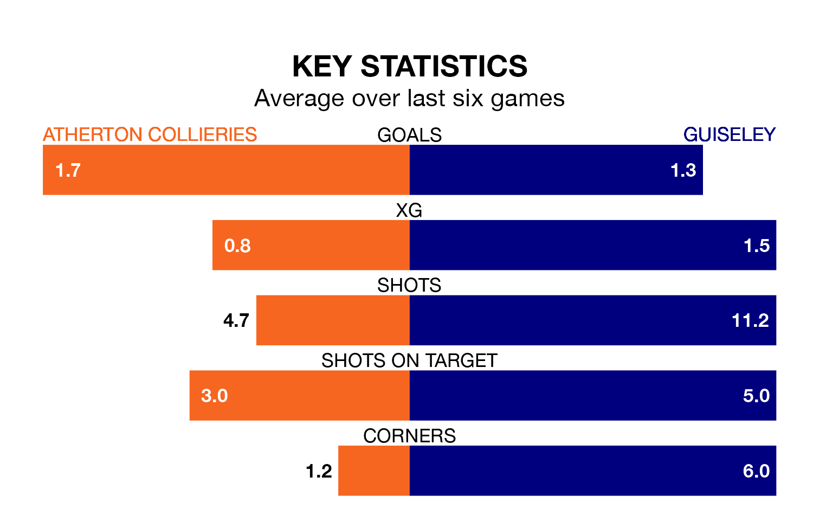

Atherton Collieries are on a poor run ahead of hosting Guiseley on Saturday, with just four points collected from their last six games.
Atherton Collieries have picked up one win and one draw in their last six Northern Premier League games, and face a Lions side whose last six games have brought three wins and one draw.
Atherton Collieries are bottom of the table after 25 games, of which they have won four and drawn three, earning 15 points.
Guiseley are 15 places ahead of the hosts in seventh, with 12 wins and six draws putting them on 42 points.
With 28 goals in 25 games so far this season, Atherton Collieries are scoring at below the league average rate with 1.1 goals per game. And they are conceding more than average, letting in 64 goals at a rate of 2.6 per game.
The Lions, meanwhile, are above average scorers, with 1.8 goals per game, compared to a league average of 1.6. They have conceded 1.5 goals per game.
In the last five years, Atherton Collieries and Guiseley have played each other on four occasions. Atherton Collieries won one of them and Guiseley the other.
On average, Atherton Collieries scored 1.0 goal and the Lions 2.8 in those matches.
Their last meeting was on October 10, when Guiseley won 3-2 at home.
Atherton Collieries's last match was on January 13, a 3-1 loss against Matlock Town.
Guiseley beat Bamber Bridge 2-0 last time out, also on January 13.
Updated: 13:09 (UTC), 17/01/24